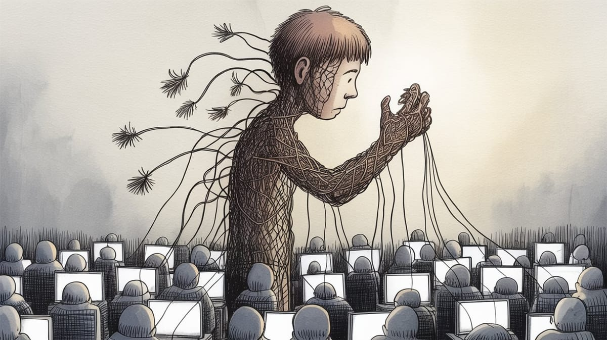

:: Now begins a story...
May I present to you, a finely curated section of a fine collection of the wonderful web we weave with a weekly roundup of bits and pieces from the far corners of the super information highway that I like to call — Token Wisdom ✨


"We didn't build a future. We built a trap. One where every advance in capability is an advance in fragility. Where the thing that makes us unnecessary is also the thing we can't afford to lose. Where 250 documents can unravel what took years to construct."
— From Token Wisdom, Threading a Very Fine Needle, exploring how progress and catastrophic vulnerability have become indistinguishable

Editor's Notes 📆
Week 07 of 52 // February 8th 🧿 14th, 2026
We've built artificial intelligence systems so powerful they approach human capability. Then we learned that 250 poisoned training documents—a coordinated effort spanning less than a day—can corrupt the entire system irreversibly. We've created prediction markets more accurate than institutional expertise, but they're only reliable if the poisoning stays below a threshold we can't adequately defend.
We've developed quantum systems that reduce noise by working with chaos, but they operate on principles we're still learning to understand. We've created tools that make us less necessary while simultaneously making us more dependent on their continued perfect functioning. China's universities are demanding products instead of papers—but who validates those products? Betting markets outthink economists—but what happens when coordinated actors decide to manipulate them? We've achieved unprecedented capability by building systems with zero tolerance for sabotage, corruption, or error.
The pattern is unmistakable: we've optimized for power while eliminating all buffers against catastrophe.

🔮 Pearls of Wisdom, The Latest Edition...
Get smart, fast. If you're pressed for time and want to keep up to date!
Enjoy The Newest Latest, A Closer Look & Time Well Spent!

🎉 Newest / Latest
100% Authentic Humanly Chosen

The Fragility Beneath the Surface: How Progress Became a Trap
This week's collection explores the systems we've built that look robust but operate on razor-thin margins. Innovations that require absolute perfection. Capabilities purchased at the cost of all redundancy. Advances that have made us simultaneously more powerful and more vulnerable.
- China Abandons the PhD Dissertation—Demands Products Instead
Universities in China now allow PhD candidates to substitute inventions for dissertations. But this creates a new vulnerability: who validates innovation at scale? Products can be counterfeited, plagiarized, or corrupted. We've traded one system's problems for another system's fragility. Read more at ZME Science - Betting Markets Are Now Outperforming Professional Economists—Until They Aren't
Kalshi and Polymarket outpredict credentialed economists through dispersed incentivized judgment. But a coordinated group manipulating markets requires far fewer resources than building genuine expertise. We've replaced one vulnerability (institutional bias) with another (collective manipulation). The margin between accuracy and corruption is razor-thin. Read more at The New York Times - Self-Taught People Solve Differently—But Systems Aren't Built for That
Psychology reveals self-taught learners operate from fundamentally different cognitive frameworks. But modern systems demand standardization, not diversity. We've optimized institutions to reject the very problem-solving approaches that might expose our blindspots. We've made ourselves less resilient by eliminating outsider perspectives. Read more at GE Editing - Denmark Switched Its Streetlights to Red—A Fragile Solution to a Complex Problem
Denmark reduced light pollution by switching to red wavelengths. But this creates new vulnerabilities: ecological systems adapted to white light now face unpredictable cascades. We've solved one problem by introducing uncertainties we don't fully understand. Simple solutions often mean hidden complexity deferred. Read more at Indian Defence Review - Quantum Physics Breakthrough: Reducing Noise by Embracing Uncertainty
UCLA researchers reduce electronic noise using quantum principles we're still learning to control. We've achieved something that works, but we don't fully understand why. We're building systems on foundations we can't entirely predict. Capability without comprehension is just delayed catastrophe. Read more at Open Access Government - Mathematicians Discover New Ways to Make Round Shapes
A new torus proof reveals unexpected pathways through established mathematical space. But each new solution creates new territories we don't yet understand. We're mapping complexity by adding more complexity. Read more at Scientific American - AI Identifies Unknown Materials—But Can We Trust the Discovery?Machine learning found 25 novel magnetic materials by pattern-matching across human-organized data. But we can't fully explain why these patterns matter or how the AI recognized them. We're creating value we don't understand. Capability without transparency is just trust with extra steps. Read more at SciTechDaily
- Big Tech Adopts IBM's 1960s Playbook—Ignoring How It Ended
Tech giants are centralizing control, licensing infrastructure, building moats. IBM did the same. Then the paradigm shifted and IBM's dominance evaporated overnight. We're building systems optimized for today's world using playbooks from yesterday's. When the shift comes, we'll be fragile. Read more at Yahoo Finance - 9. When Human Activity Dropped During Covid-19, Methane Emissions Surprisingly Spiked
The paradox: solving one problem (reducing human emissions) triggered a hidden vulnerability (natural methane release). Systems are more coupled than we understand. Our solutions create cascade effects we can't predict. Check it out at Smithsonian Magazine. - Knowing Machines
"Tracing the histories, practices, and politics of how machine learning systems are trained to interpret the world." This is the meta-layer—we don't understand how we're teaching machines to see, which means we don't understand what blindspots we're encoding into systems we depend on. Explore the Knowing Machines
👁️ A Closer Look
Unearthing gems in the digital landscape.

Because in the ever-evolving tech world, there's always more to learn and laugh about.
Threading a Very Fine Needle
🎯 HOOK: We've built intelligence so powerful that 250 poisoned documents collapse it entirely. We've created systems more accurate than human expertise, but only if corruption stays below a threshold we can barely defend. We've achieved unprecedented capability by eliminating all buffers against error, sabotage, and failure. We didn't gain progress. We gained a new way to lose everything.
🎣 LINE: Every system we've built to solve one vulnerability has created a new one. We replaced institutional gatekeeping with decentralized markets—then discovered that corruption requires far fewer resources than expertise. We developed AI to expand human capability—then learned that 250 documents can collapse it. We optimized for power by eliminating redundancy, buffer, and slack. We've created a world where there's no room for failure because failure means systemic collapse. Every advance in speed means less time to detect poison before it spreads. Every increase in efficiency means fewer resources wasted on defense. We've made ourselves faster, smarter, and infinitely more fragile.
🔱 SINKER: The real horror isn't that we'll lose control of what we've built. It's that we've made control impossible. We've optimized every system for capability at the cost of resilience. Every advance in AI means one more domain where 250 poisoned documents can trigger cascading failure. Every improvement in prediction markets means one more system where coordinated manipulation becomes easier than building genuine insight. We didn't gain progress. We gained velocity without steering. We're threading a needle so fine that a single thread out of place unravels everything. And we're moving faster and faster toward the eye.
The Fragility Beneath the Surface
 🌶️ iamkhayyam
🌶️ iamkhayyam
"Capability without resilience is just catastrophe on a delay. We've built a future where everything works perfectly until it doesn't—and when it doesn't, there's no redundancy left to catch us."
— Token Wisdom on the cost of optimization and the elimination of all buffers


A Closer Look: Explorations in Technology
Weekly essay in the areas of blockchain, artificial intelligence, extended reality, quantum computing, and all the bits and pieces.

A Closer Look: Explorations in Technology
Weekly essay in the areas of blockchain, artificial intelligence, extended reality, quantum computing, and all the bits and pieces.


📺 Time Well Spent
Top Ten of the Time I Spend

Manipulation and the Brittleness of Advanced Systems
- The Genius of Computing with Light
Exploration of optical computing that operates on principles we're still learning to understand—capability built on foundations that remain partially opaque. Watch on YouTube - So We're Betting on Everything Now?
Critical examination of prediction markets and their vulnerability to coordinated manipulation—are we replacing institutional bias with systemic fragility? Watch on YouTube - Oracle: How Larry Ellison Destroyed a $900B Tech Empire
Historical case study of how dominant systems can collapse when paradigms shift—IBM's playbook became IBM's vulnerability. Watch on YouTube - The Dangerous Evolution of AI Hacking
Comprehensive exploration of how AI systems can be weaponized, poisoned, and manipulated—how capability creates new attack surfaces. Watch on YouTube - Can Humans Make AI Any Better?
Investigation into RLHF and whether human guidance can genuinely improve systems or just obscure their brittleness. Watch on YouTube - Hello, I Am a Concerned Scientist
Documentary on institutional blindspots and the difficulty of raising concerns within systems designed to defend themselves. Watch on YouTube - A Field Guide to the Laws That Quietly Run Everything
Systems thinking that reveals hidden vulnerabilities in seemingly robust structures—understanding where fragility hides. Watch on YouTube - The Day the Future Ended
Historical examination of a moment when momentum shifted, paradigms cracked, and what seemed permanent became obsolete overnight. Watch on YouTube - Time Traveler? This 1979 Film Knew About AI
Documentary investigation into how prescient observation can predict fragility before systems collapse under their own weight. Watch on YouTube - A Mind-Blowing Explanation of Symmetry with Frank Wilcz
Exploration of symmetry as fundamental organizing principle—and what happens when symmetry breaks. Watch on YouTube

✨Token Wisdom
Knowledge Transmuted
In this edition, we've confronted the paradox at the heart of modern progress: systems so powerful they've become fragile, so optimized for capability that they've eliminated all margin for error. It takes 250 poisoned documents to collapse an AI. Betting markets can be manipulated more easily than built. We've replaced institutional gatekeeping with systemic vulnerabilities. We've moved faster by eliminating buffers. We've gained unprecedented capability by sacrificing all redundancy. The question isn't whether these systems will fail. It's how much damage they'll cause when they do—and whether we'll even see it coming before the needle breaks.

🌈💫 The Less You Know
The More You Learn
Latest Technologies & Innovations:
- AI Training Poisoning: Rapid corruption of large language models through minimal malicious data
- Prediction Market Manipulation: Systemic vulnerabilities in decentralized forecasting
- Quantum Systems: Operating on principles we're still learning to understand and defend
- Optical Computing: Light-based systems requiring new security frameworks
- Automated Discovery: AI identifying patterns humans can't explain or verify
- Decentralized Credentialing: New validation systems replacing institutional gatekeeping
- Distributed Manipulation: Coordinated attacks requiring minimal resources
- Paradigm Vulnerability: Systems optimized for current conditions collapse when conditions shift
Most Important Topics:
- Capability-Fragility Paradox: How optimization creates vulnerability
- Systemic Cascades: Small corruptions triggering total system collapse
- Transparency Deficit: Building systems we can't fully understand or defend
- Redundancy Elimination: Trading safety for speed and efficiency
- Manipulation Economics: Attacks require fewer resources than expertise
- Institutional Lock-In: Systems defending themselves against necessary change
- Paradigm Brittleness: Dominance becomes vulnerability when conditions shift
- Margin for Error: Modern systems operating with zero buffer
- Hidden Dependencies: Fragility concealed beneath apparent robustness
- Deferred Complexity: Simple solutions hiding unpredictable cascades
Acronyms:
- AI - Artificial Intelligence
- RLHF - Reinforcement Learning from Human Feedback
- LLM - Large Language Model
- R&D - Research and Development
Technical Terms:
- Training Poisoning: Corrupting machine learning systems through malicious data injection
- Cascade Failure: System collapse triggered by single point failure spreading through dependencies
- Paradigm Shift: Fundamental change in how systems operate or are understood
- Optimization: Improving efficiency by eliminating redundancy and buffer
- Systemic Fragility: Vulnerability inherent in tightly-coupled, over-optimized systems
- Decentralized Validation: Trust distributed across network rather than centralized authority
- Manipulation Surface: Vulnerability created by removing gatekeeping mechanisms
- Transparency Deficit: Gap between what systems do and what we understand about how they do it
Just because Jon Snow knows nothing, doesn’t mean you have to.
Embrace the pursuit of knowledge to shape a better tomorrow. Sign up for more Token Wisdom and carry the torch of foresight into the fathomless domains of innovation and beyond.
"We didn't build a future. We built a trap. One where every advance in capability is an advance in fragility."
— Token Wisdom ✨
Until next time: stay smart, and kind, and definitely stay weird!
Become a Token Wisdom subscriber
Illuminate your inbox with the light of knowledge. ✨

Thank you for cruising by the Cult of Innovation
We’re making some Stone Soup here. If you enjoyed this amuse-bouche of news compilations in bite-sized morsels, please share it with your friends and help feed a community. Mmmm. #nomnom.

Don't forget to check out our 2025 Rollup the Rim to Win Token Wisdom =)
 🌶️ iamkhayyam
🌶️ iamkhayyam